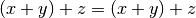
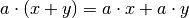
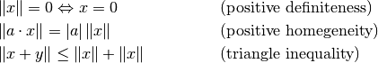
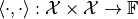
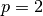

Linear Spaces¶
Definition and basic properties¶
A linear space over a field  is a set
is a set  , endorsed with the
operations of vector addition "
, endorsed with the
operations of vector addition " " and scalar multiplication "
" and scalar multiplication " " which
are required to fullfill certain properties, usually called axioms. To emphasize the importance of
all ingredients, vector spaces are often written as tuples
. We always assume that
" which
are required to fullfill certain properties, usually called axioms. To emphasize the importance of
all ingredients, vector spaces are often written as tuples
. We always assume that  or
or
 .
.
In the following, we list the axioms, which are required to hold for arbitrary
 and .
and .
Associativity of addition |
 |
Commutativity of addition |
|
Existence of a neutral element of addition |
|
Existence of inverse elements of addition |
|
Compatibility of multiplications |
|
Neutral scalar is the neutral element of scalar multiplication |
|
Distributivity with respect to vector addition |
 |
Distributivity with respect to scalar addition |
Of course, the inverse element is usually denoted with  .
.
Metric spaces¶
The vector space is called a metric space if it is additionally endorsed with a distance function or metric
with the following properties for all :
We call the tuple a Metric space.
Normed spaces¶
A function on intended to measure lengths of vectors is called a norm

if it fulfills the following conditions for all and :

A tuple fulfilling these conditions is called Normed vector space. Note that a norm induces a natural metric via .
Inner product spaces¶
Measure angles and defining notions like orthogonality requires the existence of an inner product

with the following properties for all and :
The tuple is then called an Inner product space. Note that the inner product induces the norm .
Cartesian spaces¶
We refer to the space as the  -dimensional Cartesian space over the
field . We choose this notion since Euclidean spaces are usually associated with
the Euclidean norm and distance, which are just (important) special cases. Vector addition and
scalar multiplication in are, of course, realized with entry-wise addition
and scalar multiplication.
-dimensional Cartesian space over the
field . We choose this notion since Euclidean spaces are usually associated with
the Euclidean norm and distance, which are just (important) special cases. Vector addition and
scalar multiplication in are, of course, realized with entry-wise addition
and scalar multiplication.
The natural inner product in is defined as
and reduces to the well-known dot product if . For the norm, the
most common choices are from the family of p-norms
with the standard Euclidan norm for . As metric, one usually takes the norm-induced distance function, although other choices are possible.
Weighted Cartesian spaces¶
In the standard definition of inner products, norms and distances, all components of a vector are have the same weight. This can be changed by using weighted versions of those functions as described in the following.
Let be a Hermitian square and positive definite matrix, in short . Then, a weighted inner product is defined by
Weighted norms can be defined in different ways. For a general norm , a weighted version is given by
For the  -norms with
-norms with  , the definition is usually changed to
, the definition is usually changed to
where is the -th root of the matrix  . The reason for this
definition is that for , this version is consistent with the inner product
since .
. The reason for this
definition is that for , this version is consistent with the inner product
since .
Remark on matrices as operators¶
A matrix can be regarded as a linear operator
It is well known that in the standard case of a Euclidean space, the adjoint operator is simply defined with the conjugate transposed matrix:
However if the spaces and have weighted inner products, this identification is no longer valid. If and are the weighting matrices of the inner products, we get
Thus, the adjoint of the matrix operator between the weighted spaces is rather given as .